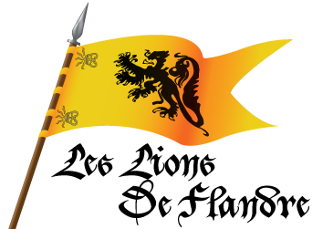
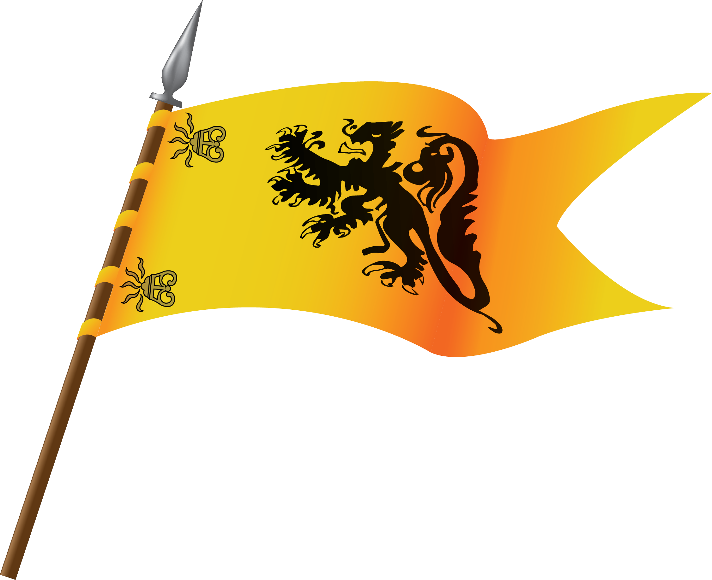

<div id="component">

  <mat-sidenav-container>
    <!-- Left Side Content -->
    <mat-sidenav-content (click)="sidenav.toggle()">
      <div id="leftSide">

          
          <div id="bigTitle" *ngIf="!sidenav.opened"
          >
            Troupe de reconstitution militaire bourguignonne XVe siècle
            <!-- <p>Association loi 1901</p> -->
          </div>

        <slideshow class="slideshow"
        [autoPlay]="true"
  [showArrows]="false"
   [imageUrls]="this.imagesUrls"
   [autoPlayInterval]="5000"
>
  </slideshow>

        <div id="coontinueToSite" *ngIf="!sidenav.opened">
          <span>Accéder au site</span><mat-icon>arrow_right_alt</mat-icon>
        </div>
      </div>
    </mat-sidenav-content>

    <!-- Right side content -->
    <mat-sidenav #sidenav mode="side" position="end" id="rightSide">

      <header>
        <!--   -->
        <span routerLink="/home" routerLinkActive="active"> Les Lions de Flandre</span>
        <!-- <div id="returnButton" (click)="goBack()">
          <mat-icon>keyboard_backspace</mat-icon> <span>Retour</span>
        </div> -->
      </header>

      <router-outlet></router-outlet>

      <div id="returnButton2">
          <button mat-raised-button (click)="this.goBack()">
            <mat-icon>keyboard_backspace</mat-icon><span> Retour</span>
          </button>
        </div>

      <footer>
        <ul>
         <span>Association</span>
          <li routerLink="/history" routerLinkActive="active">Histoire détaillée</li>
          <li routerLink="/members" routerLinkActive="active">Nos membres</li>
          <li routerLink="/join" routerLinkActive="active">Nous rejoindre</li>
          <li (click)="openContactModal()">Contact</li>
        </ul>
        <ul>
          <span>Animations</span>
          <li routerLink="/camps" routerLinkActive="active">Les camps</li>
          <li routerLink="/schools" routerLinkActive="active">Les écoles</li>
          <li routerLink="/exceptionnals" routerLinkActive="active">Les exceptionnels</li>
        </ul>
      </footer>

    </mat-sidenav>

  </mat-sidenav-container>

</div>
